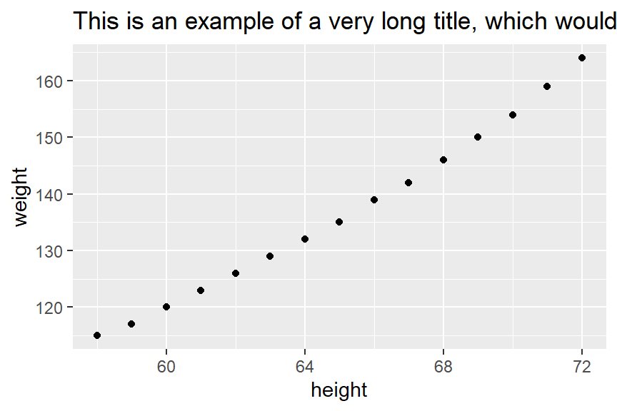
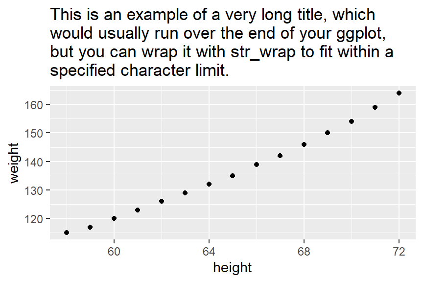
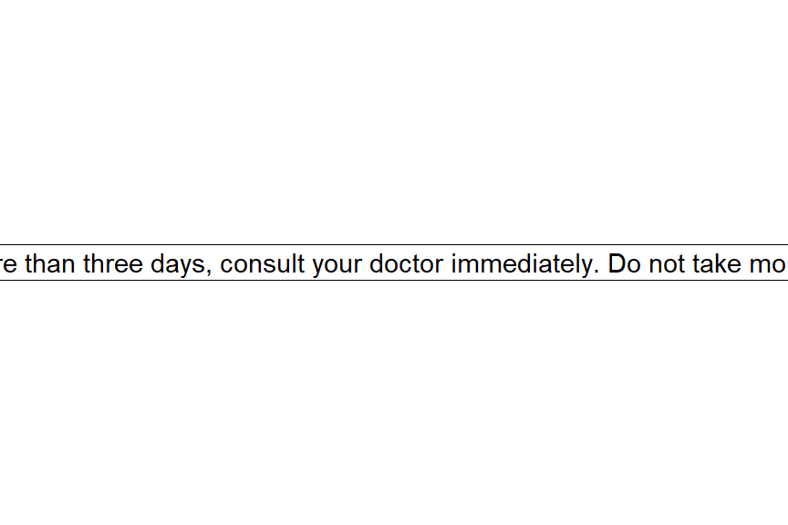
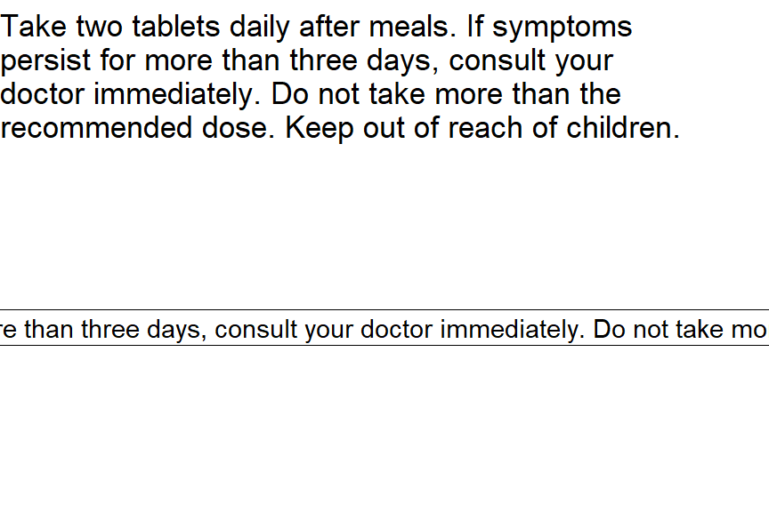
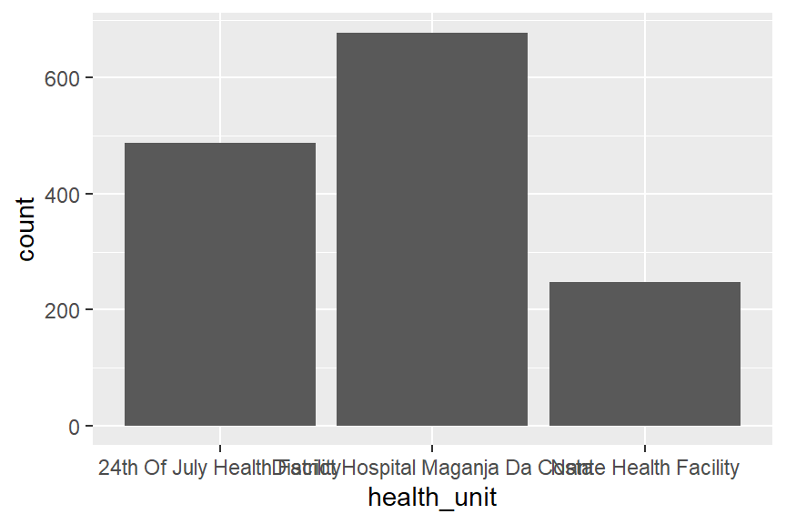
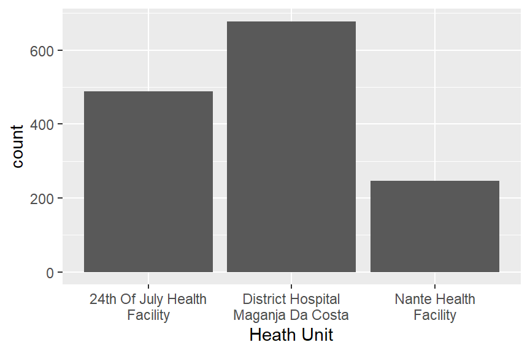

# Loading required packages
if(!require(pacman)) install.packages("pacman")
pacman::p_load(tidyverse, here, janitor)Working with Strings in R
If you’re working with data in R, one of the most important skills you can develop is working with strings. From cleaning messy survey responses to extracting meaningful patterns from text variables, string manipulation is a fundamental tool in data analysis. In this learning material, we explore practical techniques for handling text in R including detecting patterns, replacing values, splitting text, and transforming character variables efficiently.
This content is part of my training from The Graph Courses, a platform that offers high-quality, practical training in data analysis and visualization. Their courses are clear, hands-on, and especially helpful for anyone who wants to strengthen their R skills.
If you’re interested in improving your data analysis workflow especially in R, I highly recommend checking out The Graph Courses and exploring their materials.
Introduction
Proficiency in string manipulation is a vital skill for data scientists. Tasks like cleaning messy data and formatting outputs rely heavily on the ability to parse, combine, and modify character strings. This lesson focuses on techniques for working with strings in R, utilizing functions from the {stringr} package in the tidyverse. Let’s dive in!
Learning Objectives
Understand the concept of strings and rules for defining them in R
Use escapes to include special characters like quotes within strings
Employ {stringr} functions to format strings:
- Change case with
str_to_lower(),str_to_upper(),str_to_title() - Trim whitespace with
str_trim()andstr_squish() - Pad strings to equal width with
str_pad() - Wrap text to a certain width using
str_wrap()
- Change case with
Split strings into parts using
str_split()andseparate()Combine strings together with
paste()andpaste0()Extract substrings from strings using
str_sub()
Packages
Defining Strings
‣ Character strings in R can be defined using single or double quotes.
‣ Matching starting and ending quotation marks are necessary.
string_1 <- "Hello" # Using double quotes
string_2 <- 'Hello' # Using single quotes‣ Cannot include double quotes inside a string that starts and ends with double quotes. The same applies to single quotes inside a string that starts and ends with single quotes.
#will_not_work <- "Double quotes " inside double quotes"
#will_not_work <- 'Single quotes ' inside double quotes'‣ Mixing single quotes inside double quotes, and vice versa, is allowed.
#single_inside_double <- "Single quotes ' inside double quotes"‣ Use the escape character \ to include quotes within strings.
single_quote <- 'Single quotes \' inside sing quotes'
double_quote <- "Double quotes \" inside double quotes"‣ cat() function is used to display strings as output.
cat(single_quote)Single quotes ' inside sing quotescat(double_quote)Double quotes " inside double quotesSince \ is the escape character, you must use \\ to include a literal backslash in a string:
backslash <- "This is a backslash: \\"
cat(backslash)This is a backslash: \PRACTICE TIME !
Q: Error Spotting in String Definitions
Below are attempts to define character strings in R, with two out of five lines containing an error. Identify and correct these errors.
ex_a <- 'She said, "Hello!" to him.'
ex_b <- "She said \"Let's go to the moon\""
ex_c <- "They've been \"best friends\" for years."
ex_d <- 'Jane\'s diary'
ex_e <- "It's a sunny day!"String Formatting in R with {stringr}
‣ {stringr} package helps in formatting strings for analysis and visualization.
‣ Case changes
‣ Handling whitespace
‣ Standardizing length
‣ Text wrapping
Changing Case
‣ Standardizing strings or preparing them for display often requires case conversion.
‣ str_to_upper() converts strings to uppercase.
str_to_upper("hello world") [1] "HELLO WORLD"‣ str_to_lower() converts strings to lowercase.
str_to_lower("Goodbye")[1] "goodbye"‣ str_to_title() capitalizes the first letter of each word. Ideal for titling names, subjects, etc.
str_to_title("string manipulation")[1] "String Manipulation"Handling Whitespace
‣ Strings can be made neat and uniform by managing whitespace.
‣ Use str_trim() to remove leading and trailing whitespace.
str_trim(" trimmed ")[1] "trimmed"‣ str_squish() also removes whitespace at the start and end, and reduces multiple internal spaces to one.
str_squish(" too much space ") [1] "too much space"# notice the difference with str_trim
str_trim(" too much space ") [1] "too much space"Text Padding
‣ str_pad() is used to pad strings to a specified width.
‣ It helps to standardize the length of strings by adding characters.
# Pad the number "7" on the left to a total width of 3 with "0"
str_pad("7", width =3, pad = "0")[1] "007"‣ first argument: the string to pad
‣ width sets the final string width, pad specifies the padding character.
‣ side argument can be “left”, “right”, or “both”.
‣ on the right:
# Pad the number "7" on the right to length 4 with "_"
str_pad("7", width = 4, side = "right", pad = "_")[1] "7___"‣ on both sides:
# Pad the number "7" on both sides to a total width of 5 with "_"
str_pad("7", width = 5, side = "both", pad = "_") [1] "__7__"Text Wrapping
‣ str_wrap() wraps text to fit a set width, useful for confined spaces.
example_string <- "String Manipulation with str_wrap can enhance readability in plots."
wrapped_to_10 <- str_wrap(example_string, width = 10)
wrapped_to_10[1] "String\nManipulation\nwith\nstr_wrap\ncan\nenhance\nreadability\nin plots."‣ cat() displays strings with line breaks, making them readable.
cat(wrapped_to_10)String
Manipulation
with
str_wrap
can
enhance
readability
in plots.‣ Setting the width to 1 essentially splits the string into individual words:
cat(str_wrap(wrapped_to_10, width = 1))String
Manipulation
with
str_wrap
can
enhance
readability
in
plots.‣ Here’s an example of using str_wrap() in ggplot2 for neat titles:
long_title <- "This is an example of a very long title, which would usually run over the end of your ggplot, but you can wrap it with str_wrap to fit within a specified character limit."
# Example plot without title wrapping
ggplot(women, aes(height, weight)) +
geom_point() +
labs(title = long_title)
# Now, add wrapped title at 80 characters
ggplot(women, aes(height, weight)) +
geom_point() +
labs(title = str_wrap(long_title, width = 50))
PRACTICE TIME !
Q: Cleaning Patient Name Data
A dataset contains patient names with inconsistent formatting and extra white spaces. Use the {stringr} package to standardize this information:
patient_names <- c(" john doe", "ANNA SMITH ", "Emily Davis")
# 1. Trim white spaces from each name.
# 2. Convert each name to title case for consistency.1. Trim white spaces from each name.
patient_names <- c(" john doe", "ANNA SMITH ", "Emily Davis")
str_trim(patient_names)[1] "john doe" "ANNA SMITH" "Emily Davis"2. Convert each name to title case for consistency.
str_trim(str_to_title(patient_names))[1] "John Doe" "Anna Smith" "Emily Davis"Q: Standardizing Drug Codes
The following (fictional) drug codes are inconsistently formatted. Standardize them by padding with zeros to ensure all codes are 8 characters long:
drug_codes <- c("12345", "678", "91011")
# Pad each code with zeros on the left to a fixed width of 8 characters.Pad each code with zeros on the left to a fixed width of 8 characters.
#str_pad(drug_codes, width = 8, pad = "0")Q: Wrapping Medical Instructions
Use str_wrap() to format the following for better readability:
instructions <- "Take two tablets daily after meals. If symptoms persist for more than three days, consult your doctor immediately. Do not take more than the recommended dose. Keep out of reach of children."
ggplot(data.frame(x = 1, y = 1), aes(x, y, label = instructions)) +
geom_label() +
theme_void()
# Now, wrap the instructions to a width of 50 characters then plot again.
ggplot(data.frame(x = 1, y = 1), aes(x, y, label = instructions)) +
geom_label() +
theme_void() +
labs(title = str_wrap(instructions, width = 50))
Applying String Formatting to a Dataset
‣ We’ll learn to clean and standardize data using {stringr} functions.
‣ Our focus: a dataset on HIV care in Zambézia Province, Mozambique.
‣ The dataset contains formatting inconsistencies intentionally added for learning.
# Load the messy dataset
hiv_dat_messy_1 <- openxlsx::read.xlsx(here("Datalearn/hiv_dat_messy_1.xlsx")) %>%
as_tibble()
# Observe the formatting issues in these columns
hiv_dat_messy_1 %>%
select(district, health_unit, education, regimen)# A tibble: 1,413 × 4
district health_unit education regimen
<chr> <chr> <chr> <chr>
1 "Rural" District Hospital Maganja Da Costa MISSING AZT+3TC+NVP
2 "Rural" District Hospital Maganja Da Costa secondary TDF+3TC+EFV
3 "Urban" 24th Of July Health Facility MISSING tdf+3tc+efv
4 "Urban" 24th Of July Health Facility MISSING TDF+3TC+EFV
5 " Urban" 24th Of July Health Facility University tdf+3tc+efv
6 "Urban" 24th Of July Health Facility Technical AZT+3TC+NVP
7 "Rural" District Hospital Maganja Da Costa Technical TDF+3TC+EFV
8 "Urban" 24th Of July Health Facility Technical azt+3tc+nvp
9 "Urban" 24th Of July Health Facility Technical AZT+3TC+NVP
10 "Urban" 24th Of July Health Facility Technical TDF+3TC+EFV
# ℹ 1,403 more rows‣ Use tabyl to count and identify unique values, highlighting inconsistencies.
# Unique value counts for spotting inconsistencies
hiv_dat_messy_1 %>% tabyl(health_unit) health_unit n percent
24th Of July Health Facility 239 0.16914367
24th Of July Health Facility 249 0.17622081
District Hospital Maganja Da Costa 342 0.24203822
District Hospital Maganja Da Costa 336 0.23779193
Nante Health Facility 119 0.08421798
Nante Health Facility 128 0.09058740hiv_dat_messy_1 %>% tabyl(education) education n percent
MISSING 776 0.549186129
None 128 0.090587403
Primary 178 0.125973107
Secondary 82 0.058032555
Technical 17 0.012031139
University 4 0.002830856
primary 157 0.111111111
secondary 71 0.050247700hiv_dat_messy_1 %>% tabyl(regimen) regimen n percent valid_percent
AZT+3TC+EFV 24 0.0169851380 0.0179910045
AZT+3TC+NVP 229 0.1620665251 0.1716641679
D4T+3TC+ABC 1 0.0007077141 0.0007496252
D4T+3TC+EFV 2 0.0014154282 0.0014992504
D4T+3TC+NVP 16 0.0113234253 0.0119940030
OTHER 1 0.0007077141 0.0007496252
TDF+3TC+EFV 404 0.2859164897 0.3028485757
TDF+3TC+NVP 3 0.0021231423 0.0022488756
azt+3tc+efv 16 0.0113234253 0.0119940030
azt+3tc+nvp 231 0.1634819533 0.1731634183
d4t+3tc+efv 9 0.0063694268 0.0067466267
d4t+3tc+nvp 18 0.0127388535 0.0134932534
d4t+4tc+nvp 1 0.0007077141 0.0007496252
d4t6+3tc+nvp 2 0.0014154282 0.0014992504
other 2 0.0014154282 0.0014992504
tdf+3tc+efv 374 0.2646850672 0.2803598201
tdf+3tc+nvp 1 0.0007077141 0.0007496252
<NA> 79 0.0559094126 NAhiv_dat_messy_1 %>% tabyl(district) district n percent
Rural 234 0.16560510
Urban 118 0.08351026
Rural 691 0.48903043
Urban 370 0.26185421‣ tbl_summary from {gtsummary} visualizes casing, spacing, and format issues.
# Summarize data to view inconsistencies before cleaning
library(gtsummary)
hiv_dat_messy_1 %>%
select(district, health_unit, education,regimen) %>%
tbl_summary()| Characteristic | N = 1,4131 |
|---|---|
| district | |
| Rural | 234 (17%) |
| Urban | 118 (8.4%) |
| Rural | 691 (49%) |
| Urban | 370 (26%) |
| health_unit | |
| 24th Of July Health Facility | 239 (17%) |
| 24th Of July Health Facility | 249 (18%) |
| District Hospital Maganja Da Costa | 342 (24%) |
| District Hospital Maganja Da Costa | 336 (24%) |
| Nante Health Facility | 119 (8.4%) |
| Nante Health Facility | 128 (9.1%) |
| education | |
| MISSING | 776 (55%) |
| None | 128 (9.1%) |
| primary | 157 (11%) |
| Primary | 178 (13%) |
| secondary | 71 (5.0%) |
| Secondary | 82 (5.8%) |
| Technical | 17 (1.2%) |
| University | 4 (0.3%) |
| regimen | |
| azt+3tc+efv | 16 (1.2%) |
| AZT+3TC+EFV | 24 (1.8%) |
| azt+3tc+nvp | 231 (17%) |
| AZT+3TC+NVP | 229 (17%) |
| D4T+3TC+ABC | 1 (<0.1%) |
| d4t+3tc+efv | 9 (0.7%) |
| D4T+3TC+EFV | 2 (0.1%) |
| d4t+3tc+nvp | 18 (1.3%) |
| D4T+3TC+NVP | 16 (1.2%) |
| d4t+4tc+nvp | 1 (<0.1%) |
| d4t6+3tc+nvp | 2 (0.1%) |
| other | 2 (0.1%) |
| OTHER | 1 (<0.1%) |
| tdf+3tc+efv | 374 (28%) |
| TDF+3TC+EFV | 404 (30%) |
| tdf+3tc+nvp | 1 (<0.1%) |
| TDF+3TC+NVP | 3 (0.2%) |
| Unknown | 79 |
| 1 n (%) | |
‣ Next, we systematically clean each variable for consistency.
# Apply cleaning functions to standardize data
hiv_dat_clean_1 <- hiv_dat_messy_1 %>%
mutate(
district = str_to_title(str_trim(district)), # Standardize district names
health_unit = str_squish(health_unit), # Remove extra spaces
education = str_to_title(education), # Standardize education levels
regimen = str_to_upper(regimen) # Regimen column consistency
)‣ Confirm improvements by re-running tbl_summary().
# Check the cleaned data
hiv_dat_clean_1 %>%
select(district, health_unit, education, regimen) %>%
tbl_summary()| Characteristic | N = 1,4131 |
|---|---|
| district | |
| Rural | 925 (65%) |
| Urban | 488 (35%) |
| health_unit | |
| 24th Of July Health Facility | 488 (35%) |
| District Hospital Maganja Da Costa | 678 (48%) |
| Nante Health Facility | 247 (17%) |
| education | |
| Missing | 776 (55%) |
| None | 128 (9.1%) |
| Primary | 335 (24%) |
| Secondary | 153 (11%) |
| Technical | 17 (1.2%) |
| University | 4 (0.3%) |
| regimen | |
| AZT+3TC+EFV | 40 (3.0%) |
| AZT+3TC+NVP | 460 (34%) |
| D4T+3TC+ABC | 1 (<0.1%) |
| D4T+3TC+EFV | 11 (0.8%) |
| D4T+3TC+NVP | 34 (2.5%) |
| D4T+4TC+NVP | 1 (<0.1%) |
| D4T6+3TC+NVP | 2 (0.1%) |
| OTHER | 3 (0.2%) |
| TDF+3TC+EFV | 778 (58%) |
| TDF+3TC+NVP | 4 (0.3%) |
| Unknown | 79 |
| 1 n (%) | |
‣ Address plotting issues with ggplot due to lengthy health_unit labels.
ggplot(hiv_dat_clean_1, aes(x = health_unit)) +
geom_bar()
# Use str_wrap to adjust label lengths for better plot display
hiv_dat_clean_1 %>%
ggplot(aes(x = str_wrap(health_unit, width = 20))) +
geom_bar()+
labs(x = "health unit, width =20")‣ Refine the plot by correcting the axis title.
# Finalize plot adjustments
hiv_dat_clean_1 %>%
ggplot(aes(x = str_wrap(health_unit, width = 20))) +
geom_bar() +
labs(x = "Heath Unit")
PRACTICE TIME!
Q: Formatting a Tuberculosis Dataset
In this exercise, you will clean a dataset, lima_messy, originating from a tuberculosis (TB) treatment adherence study in Lima, Peru. More details about the study and the dataset are available here.
Begin by importing the dataset:
lima_messy_1 <- openxlsx::read.xlsx(here("Datalearn/lima_messy_1.xlsx")) %>%
as_tibble()
lima_messy_1# A tibble: 1,293 × 18
id age sex marital_status poverty_level prison_history
<chr> <chr> <chr> <chr> <chr> <chr>
1 pe-1008 38 and older M Single Not in pover… No
2 lm-1009 38 and older M Married / cohabi… Not in pover… No
3 pe-1010 27 to 37 m Married / cohabit… Not in pover… No
4 lm-1011 27 to 37 m Married / cohabit… Poverty/extr… No
5 pe-1012 38 and older m Married / cohabita… Not in pover… No
6 lm-1013 27 to 37 M Single Poverty/extr… No
7 pe-1014 27 To 37 m Married / cohabita… Not in pover… No
8 lm-1015 22 To 26 m Single Poverty/extr… Yes
9 pe-1016 27 to 37 m Single Not in pover… No
10 lm-1017 22 to 26 m Single Not in pover… No
# ℹ 1,283 more rows
# ℹ 12 more variables: completed_secondary_education <chr>,
# history_of_tobacco_use <chr>, alcohol_use_at_least_once_per_week <chr>,
# history_of_drug_use <chr>, history_of_rehab <chr>, mdr_tb <chr>,
# body_mass_index <chr>, history_chronic_disease <chr>, hiv_status <chr>,
# history_diabetes_melitus <chr>, treatment_outcome <chr>,
# time_to_default_days <dbl>Your task is to clean the marital_status, sex, and age variables in lima_messy. Following the cleaning process, generate a summary table using the tbl_summary() function. Aim for your output to align with this structure:
| Characteristic | N = 1,293 |
|---|---|
| marital_status | |
| Divorced / Separated | 93 (7.2%) |
| Married / Cohabitating | 486 (38%) |
| Single | 677 (52%) |
| Widowed | 37 (2.9%) |
| sex | |
| F | 503 (39%) |
| M | 790 (61%) |
| age | |
| 21 and younger | 338 (26%) |
| 22 to 26 | 345 (27%) |
| 27 to 37 | 303 (23%) |
| 38 and older | 307 (24%) |
Implement the cleaning and summarize:
# Create a new object for cleaned data
lima_clean <- lima_messy_1 %>%
mutate(
age = str_to_lower(age),
sex = str_to_upper(sex),
marital_status = str_to_title(marital_status)) # Standardize education levels
# Check cleaning
lima_clean %>%
select(marital_status, sex, age) %>%
tbl_summary()Q: Wrapping Axis Labels in a Plot
Using the cleaned dataset lima_clean from the previous task, create a bar plot to display the count of participants by marital_status. Then wrap the axis labels on the x-axis to a maximum of 15 characters per line for readability.
# Create your bar plot with wrapped text here:
ggplot(lima_clean, aes(x = str_wrap(marital_status, width = 15)))+
geom_bar()+
labs(x = "Marital Status")Splitting Strings
‣ Common data manipulation tasks include splitting and combining strings.
‣ stringr::str_split() and tidyr::separate() are tidyverse functions for this purpose.
Using str_split()
‣ str_split() divides strings into parts.
‣ To split example_string at each hyphen:
example_string <- "split-this-string"
str_split(example_string, pattern = "-")[[1]]
[1] "split" "this" "string"‣ Direct application to a dataframe is complex.
‣ With IRS dataset, focus on start_date_long:
irs <- read_csv(here("Datalearn/Illovo_data.csv"))
irs_dates_1 <- irs %>% select(village, start_date_long)
irs_dates_1# A tibble: 112 × 2
village start_date_long
<chr> <chr>
1 Mess April 07 2014
2 Nkombedzi April 22 2014
3 B Compound May 13 2014
4 D Compound May 13 2014
5 Post Office May 13 2014
6 Mangulenje May 15 2014
7 Mangulenje Senior May 27 2014
8 Old School May 27 2014
9 Mwanza May 28 2014
10 Alumenda June 18 2014
# ℹ 102 more rows‣ To extract month, day, and year from start_date_long:
irs_dates_1 %>%
mutate(start_date_parts = str_split(start_date_long, " "))# A tibble: 112 × 3
village start_date_long start_date_parts
<chr> <chr> <list>
1 Mess April 07 2014 <chr [3]>
2 Nkombedzi April 22 2014 <chr [3]>
3 B Compound May 13 2014 <chr [3]>
4 D Compound May 13 2014 <chr [3]>
5 Post Office May 13 2014 <chr [3]>
6 Mangulenje May 15 2014 <chr [3]>
7 Mangulenje Senior May 27 2014 <chr [3]>
8 Old School May 27 2014 <chr [3]>
9 Mwanza May 28 2014 <chr [3]>
10 Alumenda June 18 2014 <chr [3]>
# ℹ 102 more rows‣ For readability, use unnest_wider():
irs_dates_1 %>%
mutate(start_date_parts = str_split(start_date_long, " ")) %>%
unnest_wider(start_date_parts, names_sep = "-")# A tibble: 112 × 5
village start_date_long `start_date_parts-1` `start_date_parts-2`
<chr> <chr> <chr> <chr>
1 Mess April 07 2014 April 07
2 Nkombedzi April 22 2014 April 22
3 B Compound May 13 2014 May 13
4 D Compound May 13 2014 May 13
5 Post Office May 13 2014 May 13
6 Mangulenje May 15 2014 May 15
7 Mangulenje Senior May 27 2014 May 27
8 Old School May 27 2014 May 27
9 Mwanza May 28 2014 May 28
10 Alumenda June 18 2014 June 18
# ℹ 102 more rows
# ℹ 1 more variable: `start_date_parts-3` <chr>Using separate()
‣ separate() is more straightforward for splitting.
‣ To split into month, day, year:
irs_dates_1 %>%
separate(start_date_long, into = c("month", "day", "year"), sep = " ")# A tibble: 112 × 4
village month day year
<chr> <chr> <chr> <chr>
1 Mess April 07 2014
2 Nkombedzi April 22 2014
3 B Compound May 13 2014
4 D Compound May 13 2014
5 Post Office May 13 2014
6 Mangulenje May 15 2014
7 Mangulenje Senior May 27 2014
8 Old School May 27 2014
9 Mwanza May 28 2014
10 Alumenda June 18 2014
# ℹ 102 more rows‣ the separate() requires specifying:
the column to be split
into: names of the new columns
sep: separator character
‣ To keep the original column:
irs_dates_1 %>%
separate(start_date_long, into = c("month", "day", "year"), sep = " ", remove = FALSE)# A tibble: 112 × 5
village start_date_long month day year
<chr> <chr> <chr> <chr> <chr>
1 Mess April 07 2014 April 07 2014
2 Nkombedzi April 22 2014 April 22 2014
3 B Compound May 13 2014 May 13 2014
4 D Compound May 13 2014 May 13 2014
5 Post Office May 13 2014 May 13 2014
6 Mangulenje May 15 2014 May 15 2014
7 Mangulenje Senior May 27 2014 May 27 2014
8 Old School May 27 2014 May 27 2014
9 Mwanza May 28 2014 May 28 2014
10 Alumenda June 18 2014 June 18 2014
# ℹ 102 more rowsAlternatively, the lubridate package offers functions to extract date components:
irs_dates_1 %>%
mutate(start_date_long = mdy(start_date_long)) %>%
mutate(day = day(start_date_long),
month = month(start_date_long, label = TRUE),
year = year(start_date_long))# A tibble: 112 × 5
village start_date_long day month year
<chr> <date> <int> <ord> <dbl>
1 Mess 2014-04-07 7 Apr 2014
2 Nkombedzi 2014-04-22 22 Apr 2014
3 B Compound 2014-05-13 13 May 2014
4 D Compound 2014-05-13 13 May 2014
5 Post Office 2014-05-13 13 May 2014
6 Mangulenje 2014-05-15 15 May 2014
7 Mangulenje Senior 2014-05-27 27 May 2014
8 Old School 2014-05-27 27 May 2014
9 Mwanza 2014-05-28 28 May 2014
10 Alumenda 2014-06-18 18 Jun 2014
# ℹ 102 more rows‣ If rows miss parts, separate() warns
‣ Demonstrating with dates missing “April”:
irs_dates_with_problem <-
irs_dates_1 %>%
mutate(start_date_missing = str_replace(start_date_long, "April ", ""))
irs_dates_with_problem# A tibble: 112 × 3
village start_date_long start_date_missing
<chr> <chr> <chr>
1 Mess April 07 2014 07 2014
2 Nkombedzi April 22 2014 22 2014
3 B Compound May 13 2014 May 13 2014
4 D Compound May 13 2014 May 13 2014
5 Post Office May 13 2014 May 13 2014
6 Mangulenje May 15 2014 May 15 2014
7 Mangulenje Senior May 27 2014 May 27 2014
8 Old School May 27 2014 May 27 2014
9 Mwanza May 28 2014 May 28 2014
10 Alumenda June 18 2014 June 18 2014
# ℹ 102 more rows‣ Splitting with missing parts:
irs_dates_with_problem %>%
separate(start_date_missing, into = c("month", "day", "year"), sep = " ")Warning: Expected 3 pieces. Missing pieces filled with `NA` in 3 rows [1, 2,
12].# A tibble: 112 × 5
village start_date_long month day year
<chr> <chr> <chr> <chr> <chr>
1 Mess April 07 2014 07 2014 <NA>
2 Nkombedzi April 22 2014 22 2014 <NA>
3 B Compound May 13 2014 May 13 2014
4 D Compound May 13 2014 May 13 2014
5 Post Office May 13 2014 May 13 2014
6 Mangulenje May 15 2014 May 15 2014
7 Mangulenje Senior May 27 2014 May 27 2014
8 Old School May 27 2014 May 27 2014
9 Mwanza May 28 2014 May 28 2014
10 Alumenda June 18 2014 June 18 2014
# ℹ 102 more rows‣ Now we have the day and month in the wrong columns for some rows.
Q: Splitting Age Range Strings
Consider the esoph_ca dataset, from the {medicaldata} package, which involves a case-control study of esoph ageal cancer in France.
medicaldata::esoph_ca %>% as_tibble()# A tibble: 88 × 5
agegp alcgp tobgp ncases ncontrols
<ord> <ord> <ord> <dbl> <dbl>
1 25-34 0-39g/day 0-9g/day 0 40
2 25-34 0-39g/day 10-19 0 10
3 25-34 0-39g/day 20-29 0 6
4 25-34 0-39g/day 30+ 0 5
5 25-34 40-79 0-9g/day 0 27
6 25-34 40-79 10-19 0 7
7 25-34 40-79 20-29 0 4
8 25-34 40-79 30+ 0 7
9 25-34 80-119 0-9g/day 0 2
10 25-34 80-119 10-19 0 1
# ℹ 78 more rowsSplit the age ranges in the agegp column into two separate columns: agegp_lower and agegp_upper.
After using the separate() function, the “75+” age group will require special handling. Use readr::parse_number()or another method to convert the lower age limit (“75+”) to a number.
medicaldata::esoph_ca %>%
separate(agegp, into = c("agegp_lower", "agegp_upper"), sep = " ") %>%
mutate(
agegp_lower = parse_number(agegp_lower),
agegp_upper = parse_number(agegp_upper)
)Separating Special Characters
‣ To use the separate() function on special characters (., +, *, ?) need to be escaped in \\
‣ Consider the scenario where dates are formatted with periods:
# Correct separation of dates with periods
irs_with_period <- irs_dates_1 %>%
mutate(start_date_long = format(lubridate::mdy(start_date_long), "%d.%m.%Y"))
irs_with_period# A tibble: 112 × 2
village start_date_long
<chr> <chr>
1 Mess 07.04.2014
2 Nkombedzi 22.04.2014
3 B Compound 13.05.2014
4 D Compound 13.05.2014
5 Post Office 13.05.2014
6 Mangulenje 15.05.2014
7 Mangulenje Senior 27.05.2014
8 Old School 27.05.2014
9 Mwanza 28.05.2014
10 Alumenda 18.06.2014
# ℹ 102 more rows‣ When attempting to separate this date format directly with sep = "." :
irs_with_period %>%
separate(start_date_long, into = c("day", "month", "year"), sep = ".")Warning: Expected 3 pieces. Additional pieces discarded in 112 rows [1, 2, 3, 4, 5, 6,
7, 8, 9, 10, 11, 12, 13, 14, 15, 16, 17, 18, 19, 20, ...].# A tibble: 112 × 4
village day month year
<chr> <chr> <chr> <chr>
1 Mess "" "" ""
2 Nkombedzi "" "" ""
3 B Compound "" "" ""
4 D Compound "" "" ""
5 Post Office "" "" ""
6 Mangulenje "" "" ""
7 Mangulenje Senior "" "" ""
8 Old School "" "" ""
9 Mwanza "" "" ""
10 Alumenda "" "" ""
# ℹ 102 more rows‣ This is because, in regex (regular expressions), the period is a special character.
‣ The correct approach is to escape the period uses a double backslash (\):
irs_with_period %>%
separate(start_date_long, into = c("day", "month", "year"), sep = "\\.")# A tibble: 112 × 4
village day month year
<chr> <chr> <chr> <chr>
1 Mess 07 04 2014
2 Nkombedzi 22 04 2014
3 B Compound 13 05 2014
4 D Compound 13 05 2014
5 Post Office 13 05 2014
6 Mangulenje 15 05 2014
7 Mangulenje Senior 27 05 2014
8 Old School 27 05 2014
9 Mwanza 28 05 2014
10 Alumenda 18 06 2014
# ℹ 102 more rows‣ Now, the function understands to split the string at each literal period.
‣ When using other special characters like +, *, or ?, they need to be preceded with a double backslash (\) in the sep argument.
What is a Special Character?
In regular expressions, which help find patterns in text, special characters have specific roles. For example, a period (.) is a wildcard that can represent any character. So, in a search, “do.t” could match “dolt,” “dost,” or “doct” Similarly, the plus sign (+) is used to indicate one or more occurrences of the preceding character. For example, “ho+se” would match “hose” or “hooose” but not “hse.” When we need to use these characters in their ordinary roles, we use a double backslash (\\) before them, like “\\.” or “\\+.” More on these special characters will be covered in a future lesson.
Q: Separating Special Characters
Your next task involves the hiv_dat_clean_1 dataset. Focus on the regimen column, which lists drug regimens separated by a + sign. Your goal is to split this column into three new columns: drug_1, drug_2, and drug_3 using the separate() function. Pay close attention to how you handle the + separator. Here’s the column:
hiv_dat_clean_1 %>%
select(regimen) %>%
separate(regimen, into = c("drug_1", "drug_2", "drug_3"), sep = "\\+")Warning: Expected 3 pieces. Missing pieces filled with `NA` in 3 rows [42, 538,
881].# A tibble: 1,413 × 3
drug_1 drug_2 drug_3
<chr> <chr> <chr>
1 AZT 3TC NVP
2 TDF 3TC EFV
3 TDF 3TC EFV
4 TDF 3TC EFV
5 TDF 3TC EFV
6 AZT 3TC NVP
7 TDF 3TC EFV
8 AZT 3TC NVP
9 AZT 3TC NVP
10 TDF 3TC EFV
# ℹ 1,403 more rowsCombining Strings with paste()
‣ Concatenate strings with paste()
‣ To combine two simple strings:
string1 <- "Hello"
string2 <- "World"
paste(string1, string2)[1] "Hello World"‣ Let’s demonstrate this with the IRS data.
‣ First, we’ll separate the start date into individual columns:
irs_dates_separated <- # store for later use
irs_dates_1 %>%
separate(start_date_long, into = c("month", "day", "year"), sep = " ", remove = FALSE)
irs_dates_separated# A tibble: 112 × 5
village start_date_long month day year
<chr> <chr> <chr> <chr> <chr>
1 Mess April 07 2014 April 07 2014
2 Nkombedzi April 22 2014 April 22 2014
3 B Compound May 13 2014 May 13 2014
4 D Compound May 13 2014 May 13 2014
5 Post Office May 13 2014 May 13 2014
6 Mangulenje May 15 2014 May 15 2014
7 Mangulenje Senior May 27 2014 May 27 2014
8 Old School May 27 2014 May 27 2014
9 Mwanza May 28 2014 May 28 2014
10 Alumenda June 18 2014 June 18 2014
# ℹ 102 more rows‣ Then, recombine day, month and year with paste():
irs_dates_separated %>%
select(day, month, year) %>%
mutate(start_date_long_2 = paste(day, month, year))# A tibble: 112 × 4
day month year start_date_long_2
<chr> <chr> <chr> <chr>
1 07 April 2014 07 April 2014
2 22 April 2014 22 April 2014
3 13 May 2014 13 May 2014
4 13 May 2014 13 May 2014
5 13 May 2014 13 May 2014
6 15 May 2014 15 May 2014
7 27 May 2014 27 May 2014
8 27 May 2014 27 May 2014
9 28 May 2014 28 May 2014
10 18 June 2014 18 June 2014
# ℹ 102 more rows‣ sep argument specifies the separator between elements
‣ For different separators, we can write:
irs_dates_separated %>%
mutate(start_date_long_2 = paste(day, month, year, sep = "-"))# A tibble: 112 × 6
village start_date_long month day year start_date_long_2
<chr> <chr> <chr> <chr> <chr> <chr>
1 Mess April 07 2014 April 07 2014 07-April-2014
2 Nkombedzi April 22 2014 April 22 2014 22-April-2014
3 B Compound May 13 2014 May 13 2014 13-May-2014
4 D Compound May 13 2014 May 13 2014 13-May-2014
5 Post Office May 13 2014 May 13 2014 13-May-2014
6 Mangulenje May 15 2014 May 15 2014 15-May-2014
7 Mangulenje Senior May 27 2014 May 27 2014 27-May-2014
8 Old School May 27 2014 May 27 2014 27-May-2014
9 Mwanza May 28 2014 May 28 2014 28-May-2014
10 Alumenda June 18 2014 June 18 2014 18-June-2014
# ℹ 102 more rows‣ To concatenate without spaces, we can set sep = "":
irs_dates_separated %>%
select(day, month, year) %>%
mutate(start_date_long_2 = paste(day, month, year, sep = ""))# A tibble: 112 × 4
day month year start_date_long_2
<chr> <chr> <chr> <chr>
1 07 April 2014 07April2014
2 22 April 2014 22April2014
3 13 May 2014 13May2014
4 13 May 2014 13May2014
5 13 May 2014 13May2014
6 15 May 2014 15May2014
7 27 May 2014 27May2014
8 27 May 2014 27May2014
9 28 May 2014 28May2014
10 18 June 2014 18June2014
# ℹ 102 more rows‣ Or use paste0() function, which is equivalent to paste(..., sep = ""):
irs_dates_separated %>%
select(day, month, year) %>%
mutate(start_date_long_2 = paste0(day, month, year))# A tibble: 112 × 4
day month year start_date_long_2
<chr> <chr> <chr> <chr>
1 07 April 2014 07April2014
2 22 April 2014 22April2014
3 13 May 2014 13May2014
4 13 May 2014 13May2014
5 13 May 2014 13May2014
6 15 May 2014 15May2014
7 27 May 2014 27May2014
8 27 May 2014 27May2014
9 28 May 2014 28May2014
10 18 June 2014 18June2014
# ℹ 102 more rows‣ Combine paste() with other string functions to solve a realistic data problem.
‣ Consider the ID column in the hiv_dat_messy_1 dataset:
hiv_dat_messy_1 %>%
select(patient_id)# A tibble: 1,413 × 1
patient_id
<chr>
1 pd-10037
2 pd-10537
3 pd-5489
4 id-5523
5 pd-4942
6 pd-4742
7 pd-10879
8 id-2885
9 pd-4861
10 pd-5180
# ℹ 1,403 more rows‣ Standardize these IDs to the same number of characters.
‣ Use separate() to split the IDs into parts, then use paste() to recombine them:
hiv_dat_messy_1 %>%
select(patient_id) %>% # for visibility
separate(patient_id, into = c("prefix", "patient_num"), sep = "-", remove = FALSE) %>%
mutate(patient_num = str_pad(patient_num, width = 5, side = "left", pad = "0")) %>%
mutate(patient_id_padded = paste(prefix, patient_num, sep = "-"))# A tibble: 1,413 × 4
patient_id prefix patient_num patient_id_padded
<chr> <chr> <chr> <chr>
1 pd-10037 pd 10037 pd-10037
2 pd-10537 pd 10537 pd-10537
3 pd-5489 pd 05489 pd-05489
4 id-5523 id 05523 id-05523
5 pd-4942 pd 04942 pd-04942
6 pd-4742 pd 04742 pd-04742
7 pd-10879 pd 10879 pd-10879
8 id-2885 id 02885 id-02885
9 pd-4861 pd 04861 pd-04861
10 pd-5180 pd 05180 pd-05180
# ℹ 1,403 more rows‣ In this example, patient_id is split into a prefix and a number.
‣ The number is padded with zeros to ensure consistent length
‣ They’re concatenated back together using paste() with a hyphen as the separator.
Q: Standardizing IDs in the lima_messy_1 Dataset
In the lima_messy_1 dataset, the IDs are not zero-padded, making them hard to sort.
For example, the ID pe-998 is at the top of the list after sorting in descending order, which is not what we want.
lima_messy_1 %>%
select(id) %>%
arrange(desc(id)) # sort in descending order (highest IDs should be at the top)# A tibble: 1,293 × 1
id
<chr>
1 pe-998
2 pe-996
3 pe-951
4 pe-900
5 pe-2347
6 pe-2337
7 pe-2335
8 pe-2333
9 pe-2331
10 pe-2329
# ℹ 1,283 more rowsTry to fix this using a similar procedure to the one used for hiv_dat_messy_1.
Your Task:
- Separate the ID into parts.
- Pad the numeric part for standardization.
- Recombine the parts using
paste(). - Resort the IDs in descending order. The highest ID should end in
2347
lima_messy_1 %>%
select(id) %>% # for visibility
separate(id, into = c("prefix", "patient_num"), sep = "-", remove = FALSE) %>%
mutate(patient_num = str_pad(patient_num, width = 5, side = "left", pad = "0")) %>%
mutate(id_padded = paste(prefix, patient_num, sep = "-")) %>%
arrange(desc(id_padded))Q: Creating Summary Statements
Create a column containing summary statements combining village, start_date_default, and coverage_p from the irs dataset. The statement should describe the spray coverage for each village.
Desired Output: “For village X, the spray coverage was Y% on Z date.”
Your Task: - Select the necessary columns from the irs dataset. - Use paste() to create the summary statement.
irs %>%
select(village, start_date_default, coverage_p) %>%
mutate(
summary_statement = paste(
"For village", village,
", the spray coverage was", coverage_p,
"% on", start_date_default, "date."))Subsetting Strings with str_sub
‣ str_sub is used to extract parts of a string based on character positions
‣ Basic syntax: str_sub(string, start, end)
‣ Example: Extracting first 2 characters from patient IDs
patient_ids <- c("ID12345-abc", "ID67890-def")
str_sub(patient_ids, 1, 2) [1] "ID" "ID"‣ To extract other characters, like the first 5, adjust the start and end values
str_sub(patient_ids, 1, 5)[1] "ID123" "ID678"‣ Negative values count backward from the string end, useful for suffixes
‣ Examples: Get the last 4 characters of patient IDs:
str_sub(patient_ids, -4, -1)[1] "-abc" "-def"‣ str_sub will not error out if indices exceed string length
str_sub(patient_ids, 1, 11) # Safely returns the full string if range exceeds string length[1] "ID12345-abc" "ID67890-def"‣ Within mutate(), str_sub can be used to transform columns in a data frame
‣ Example: Extracting year and month from start_date_default column and create a new column called year_month:
irs %>%
select(start_date_default) %>%
mutate(year_month = str_sub(start_date_default, start = 1, end = 7))# A tibble: 112 × 2
start_date_default year_month
<date> <chr>
1 2014-04-07 2014-04
2 2014-04-22 2014-04
3 2014-05-13 2014-05
4 2014-05-13 2014-05
5 2014-05-13 2014-05
6 2014-05-15 2014-05
7 2014-05-27 2014-05
8 2014-05-27 2014-05
9 2014-05-28 2014-05
10 2014-06-18 2014-06
# ℹ 102 more rowsPRACTICE TIME!
Q: Extracting ID Substrings
Use str_sub() to isolate just the numeric part of the patient_id column in the hiv_dat_messy_1 dataset.
hiv_dat_messy_1 %>%
select(patient_id) %>%
# Complete the code below:
mutate(numeric_id = str_sub(patient_id, -5, -1))Wrap Up!
Congratulations on reaching the end of this lesson! You’ve learned about strings in R and various functions to manipulate them effectively.
The table below gives a quick recap of the key functions we covered. Remember, you don’t need to memorize all these functions. Knowing they exist and how to look them up (like using Google) is more than enough for practical applications.
| Function | Description | Example | Example Output |
str_to_upper() |
Convert characters to uppercase | str_to_upper("hiv") |
“HIV” |
str_to_lower() |
Convert characters to lowercase | str_to_lower("HIV") |
“hiv” |
str_to_title() |
Convert first character of each word to uppercase | str_to_title("hiv awareness") |
“Hiv Awareness” |
str_trim() |
Remove whitespace from start & end | str_trim(" hiv ") |
“hiv” |
str_squish() |
Remove whitespace from start & end and reduce internal spaces | str_squish(" hiv cases ") |
“hiv cases” |
str_pad() |
Pad a string to a fixed width | str_pad("45", width = 5) |
“00045” |
str_wrap() |
Wrap a string to a given width (for formatting output) | str_wrap("HIV awareness", width = 5) |
“HIV” |
str_split() |
Split elements of a character vector | str_split("Hello-World", "-") |
c(“Hello”, “World”) |
paste() |
Concatenate vectors after converting to character | paste("Hello", "World") |
“Hello World” |
str_sub() |
Extract and replace substrings from a character vector | str_sub("HelloWorld", 1, 4) |
“Hell” |
separate() |
Separate a character column into multiple columns |
|
|b |c ||Hello |World | |
Note that while these functions cover common tasks such as string standardization, splitting and joining strings, this introduction only scratches the surface of what’s possible with the {stringr} package. If you work with a lot of raw text data, you may want to do further exploring on the stringr website.
Answer Key
Q: Error Spotting in String Definitions
ex_a: Correct.ex_b: Correct.ex_c: Error. Corrected version:ex_c <- "They've been \"best friends\" for years."ex_d: Error. Corrected version:ex_d <- 'Jane\'s diary'ex_e: Error. Close quote missing. Corrected version:ex_e <- "It's a sunny day!"
Q: Cleaning Patient Name Data
patient_names <- c(" john doe", "ANNA SMITH ", "Emily Davis")
patient_names <- str_trim(patient_names) # Trim white spaces
patient_names <- str_to_title(patient_names) # Convert to title caseQ: Standardizing Drug Codes
drug_codes <- c("12345", "678", "91011")
# Pad each code with zeros on the left to a fixed width of 8 characters.
drug_codes_padded <- str_pad(drug_codes, 8, pad = "0")Q: Wrapping Medical Instructions
instructions <- "Take two tablets daily after meals. If symptoms persist for more than three days, consult your doctor immediately. Do not take more than the recommended dose. Keep out of reach of children."
# Wrap instructions
wrapped_instructions <- str_wrap(instructions, width = 50)
ggplot(data.frame(x = 1, y = 1), aes(x, y, label = wrapped_instructions)) +
geom_label() +
theme_void()Q: Formatting a Tuberculosis Dataset
The steps to clean the lima_messy dataset would involve:
lima_clean <- lima_messy %>%
mutate(
marital_status = str_squish(str_to_title(marital_status)), # Clean and standardize marital_status
sex = str_squish(str_to_upper(sex)), # Clean and standardize sex
age = str_squish(str_to_lower(age)) # Clean and standardize age
)
lima_clean %>%
select(marital_status, sex, age) %>%
tbl_summary()Then, use the tbl_summary() function to create the summary table.
Q: Wrapping Axis Labels in a Plot
# Assuming lima_clean is already created and contains marital_status
ggplot(lima_clean, aes(x = str_wrap(marital_status, width = 15))) +
geom_bar() +
labs(x = "Marital Status")Q: Splitting Age Range Strings
esoph_ca %>%
select(agegp) %>% # for illustration
separate(agegp, into = c("agegp_lower", "agegp_upper"), sep = "-") %>%
mutate(agegp_lower = readr::parse_number(agegp_lower))Q: Creating Summary Statements
irs %>%
select(village, start_date_default, coverage_p) %>%
mutate(summary_statement = paste0("For village ", village, ", the spray coverage was ", coverage_p, "% on ", start_date_default))Q: Extracting ID Substrings
hiv_dat_messy_1 %>%
select(patient_id) %>%
mutate(numeric_part = str_sub(patient_id, 4))Contributors
The following team members contributed to this lesson:


KENE DAVID NWOSU
Passionate about world improvement